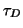
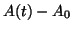
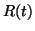
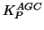
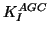
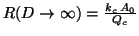
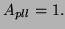

Amplitude regulation is achieved by the Automatic Gain Control (see
figure 8). The modulus  of the cantilever oscillation
of the cantilever oscillation
 is extracted by a diode followed by a first-order low-pass
filter, modelized by:
is extracted by a diode followed by a first-order low-pass
filter, modelized by:

being the time constant of the envelope detection.
 is then compared to the amplitude setpoint
is then compared to the amplitude setpoint  . The error
signal
. The error
signal

, after being fed into a PI (Proportional-Integral) system [27,28,29], is used to change the variable gain
. Both the Proportional gain
(controlling the ``stiffness'' of the AGC loop) and the Integration gain
(controlling the ``viscosity'' of the AGC loop) can be set by the user. One obtains the dynamic gain :
Without tip-surface interaction,

with